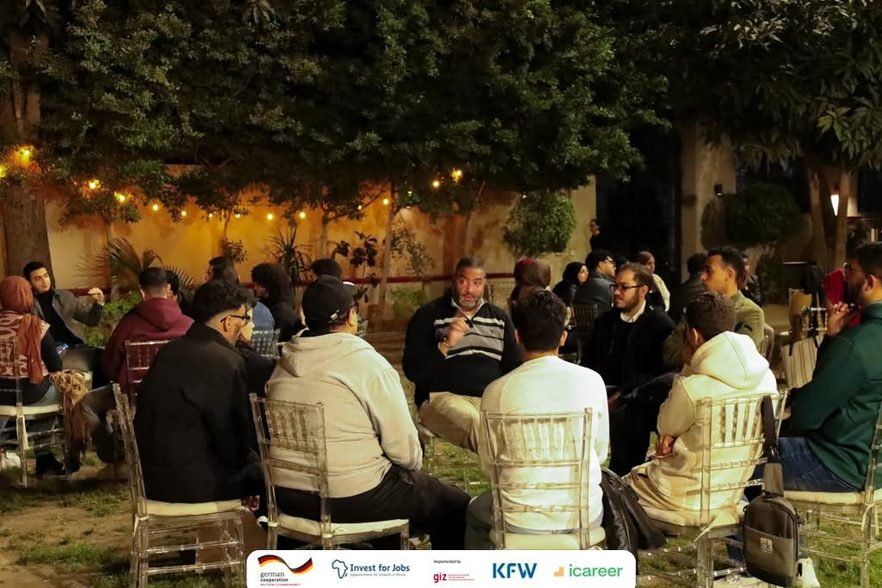
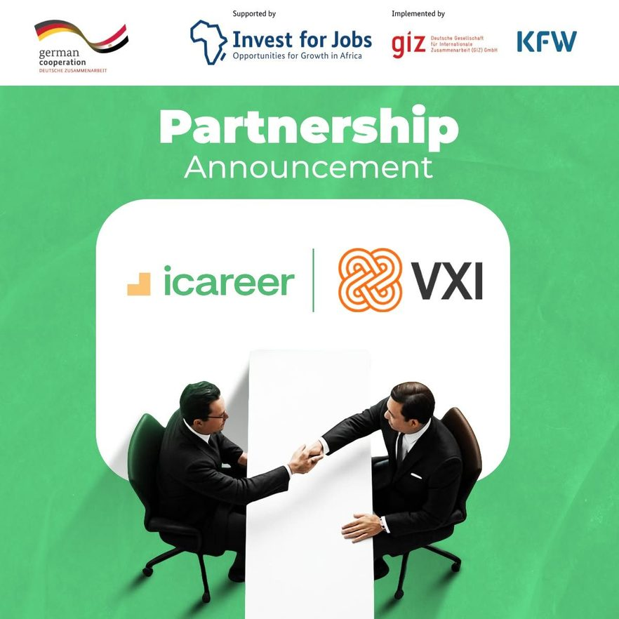
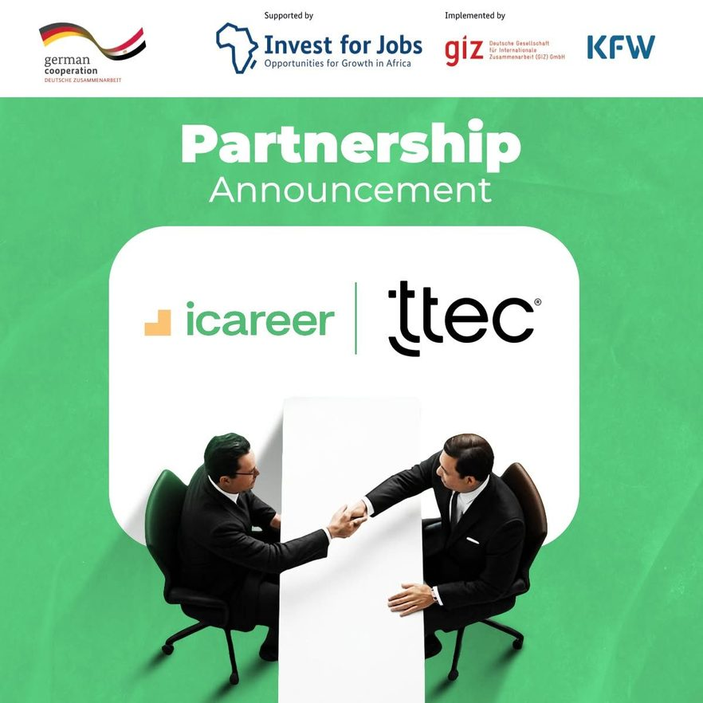
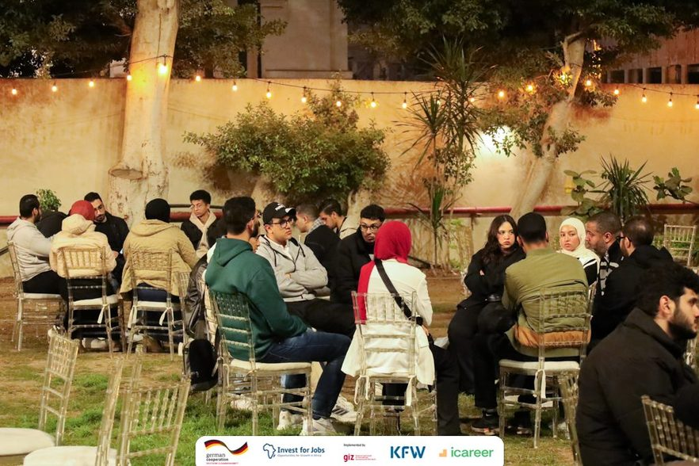
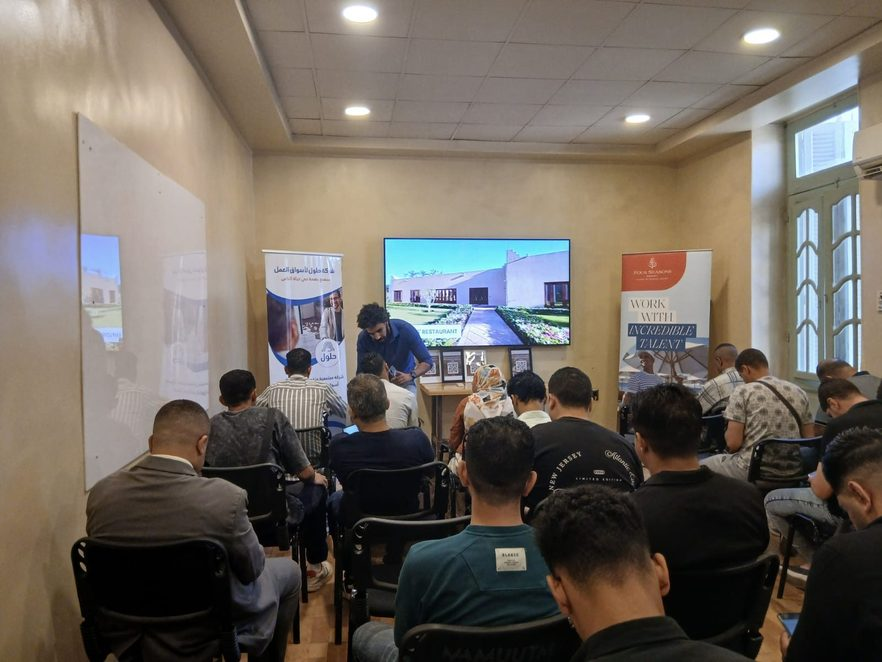
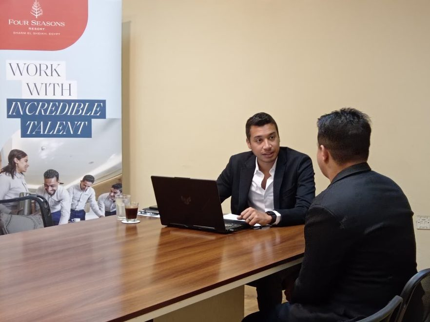

Employment
GIZ: JPSME · Job Placement Support in Hospitality and ICT
Inherited at 75% behind, with a client who had stopped believing in project managers. Extended the timeline rather than the deficit.

The Objective
Facilitate the successful placement of 1,000 individuals into decent and sustainable employment within the hospitality and ICT sectors, with a one-month retention condition on every placement counted.
The Challenge
Took the project over with three quarters of the year already gone, targets running 75% behind, no clear processes in place, and a client openly frustrated by repeated project manager turnover. The delivery risk and the relationship risk were the same risk.
The Execution
- Stabilised the client relationship first. A frustrated client is a delivery risk before it is ever a commercial one.
- Installed clear, documented processes where none existed, so performance stopped depending on which individual was in the room.
- Built 3 Career Days with VXI and TTEC: taking volume directly to the employers instead of waiting for applications to arrive.
- Launched Mentor Mingle: six technical mentors across different tracks, connecting youth directly with labour market experts.
- Ran continuous career coaching initiatives to keep the funnel converting in the gaps between events.
- Extended the delivery timeline rather than cut corners on verification, prioritising real, retained placements over hitting an artificial date.
Results Delivered
- 632 verified employment placements achieved, decreasing the deficit from 75% to just 47%.
- Project budget held under control throughout the entire recovery.
- Client satisfaction raised significantly by project close.
- Repeatable process architecture left behind for the next cycle.
Photos






Have a project that needs a steady hand?
Book a free 15-minute call, no pressure, just a conversation about where you're stuck.
Book a Free 15-Min Call